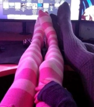

Offiziell
| Begriff auf Hakam | Nutzung | Erweiterte Informationen (Beispiele) |
|---|---|---|
| apfelbesessen | Wenn Jemand die Marke Apple über alles stellt oder Mac Books kauft, und Glorifiziert nicht zu verwechseln mit einem Appleuser | "Der Herr Jung / Herr Müller ist ja absolut apfelbesessen. „Der kauft alle iPhones" |
| Smegma | Allgemeine Begrüßung und Verabschiedung (Als Verabschiedung heißt es Bis (zum) Smegma!) | kann förmlich benutzt werden "Smegma!" |
| Programmiersocken | Socken die bis zum Knie gehen  |
"Hast du auch Programmiersocken?" |
| Teebeutel | Snus | "Hast du nen Teebeutel für mich?" |
| Nitro | Lachgas | macht Spaß |
| Bifte | Vape, bzw. E-Zigarette | Check mal die Bifte |
| Assitoaster | Sonnenbank | anderes Wort für Sonnenbank |
| Toaster | synonym für Protogen | Beste |
| Smegma-Male | Die heftigste, vorstellbare Person, quasi ein Gott | "Du bist voll das Smegma-Male" |
| Djungelskog | Plüschpandabär / "Sekte" | Schlüsselfigur des Vulkanismus |
| Gogong | Zug | wurde aus der Kirzek-Sprache übernommen |
| Sprühschiss | Durchfall | "Nach dem Essen von Herr Preuß habe ich richtig dicken Sprühschiss." |
| Krebsbolzen | Zigarette | "Gönn deiner Lunge doch mal ein Krebsbolzen!" |
| Gewürzstange | Blunt / Joint | "Lass mal eine Gewürzstange zusammen rauchen" |
| Krebs-Schnitt | Buzzcut oder Beliebiger Kurzhaarschnitt unter 12mm Länge | Das ganze Parkhaus hat jetzt einen Krebs-Schnitt |
| Apfeluhr | Apple Watch | "Ich habe meine Seele gegen eine Apfeluhr getauscht." |
| Apfelbox | Apple TV | "Herr Jung hat seine Apfelbox vergessen" |
| Apfelhandy | iPhone | "Wieso hat jeder hier ein Apfelhandy?" |
| Hetax | Synonym für Hentai | "Ich liebe es wenn bei Hetax alle 1000 Jahre alt sind." |
| Vulkanismus | Der Gaube an den Vulkan | Verehren des Vulkanes wie bei einem Gott, Der Gedanke Der Vulkan kann über alles entscheiden |
| Gleis 7 | Alkohol konsumieren | "Lass mal Gleis 7 gehen" |
| Knacks/Knax | Wenn jemand sich eigenartig/exzentrisch verhält | Der Fotzenfritz hat einen Knax |
| Synapsenfriedhof | Ein Vollidiot | |
| AfD-Dackel | Jemand der keine Ahnung von Politik hat und AfD wählt | Treue AfD-Anhänger, die nur nachplappern; Wie kleine Schoßhündchen |
| Gemüsehändler | Jemand der natürliche Drogen verkauft (hauptsächlich Cannabis) | Bei chemischen Drogen auch Alchemist genannt |
| Kimme | Arschritze | "Die Kimme ist der Ort an dem sich zwei Backen treffen" |
| Alphakevin | Die dümmste vorstellbare Person | Der Lindner ist aber der Alphakevin |
| stögern | allgemeine Fortbewegung zu Fuß (schnelles Laufen). | Kann auch als kontextabhängiges Wort für sämtliche Aktionen benutzt werden. |
| bifteln | Substanzen (Nikotin) durch ein elektronisches Gerät verdampfen/erhitzen um es zu konsumieren | Wir dürfen uns nicht beim bifteln erwischen lassen |
| merkeln | nichts tun | einfach rumsitzen und nichts machen und dabei trotzdem wichtig aussehen |
| Monstern | Hyperaktiv sein | Abgeleitet von Monster Energy |
| schäfern | Bei dem Schafen rauchen gehen | "Kommst du mit schäfern?;" |
| (rein)hitlern | Rechtsextreme oder Rechtspopulistische Kommentare machen | "Björn Höcke hitlert aber richtig rein" |
| södern | Wenn man etwas kritisiert was man selber (heimlich) tut | Auch allgemein für Scheiße labern / yappen, wenn jemand Müll labert |
Phrasen
| Begriff auf Hakam | Nutzung | Erweiterte Informationen (Beispiele) |
|---|---|---|
| Zum Stöger werden | Ausrasten Bzw. Aufregen | kann verwendet werden wie: "Ich bin auf 180" |
| Zum Sem werden | wortwörtlich fuchsteufelswild werden (horny werden) | e621 macht mich zum Sem |
| Ich glaub mein Jörg müllert | Wenn man sich aufregt | Kann mit jedem beliebigen Namen gemacht werden (Ich glaub mein Markus södert) |
| Rambo Zambo machen | Mit katastrophaler Politik Länder ruinieren | Friedrich Merz macht mit Deutschland Rambo Zambo |
"Konfuzius sagte"
- Lieber zwei Damen im Arm, als zwei Arme im Darm
- An Herr Kirzek wird gleich herumgefuchtelt
- Tickle my pickle
- Geengowengon
- Brr Uzi Schniedelwutz
- Wait a minute, who are you?
- Oft ist das was du suchst schon in dir
- Nachts ist es kälter als draußen
- Wer im Glashaus sitzt sollte nur im dunkeln scheißen
- Fisch ist Fleich amina koyim
- After ist mein Lieblingsbuch
- Das Wald Plakat ist ein Banger, war es schon immer
- skamtebord
- Futa-Porn is Besta-Porn
Honorable mention
- Feretta - The best Futa and Yiff artist that has been seen in this current timeline